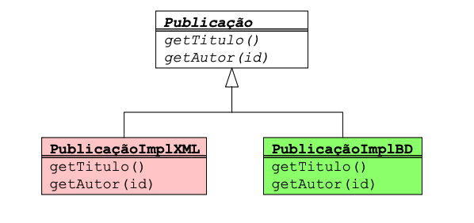
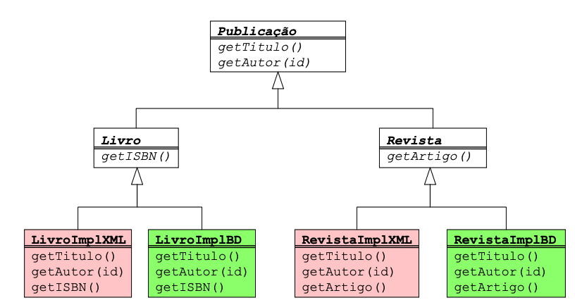
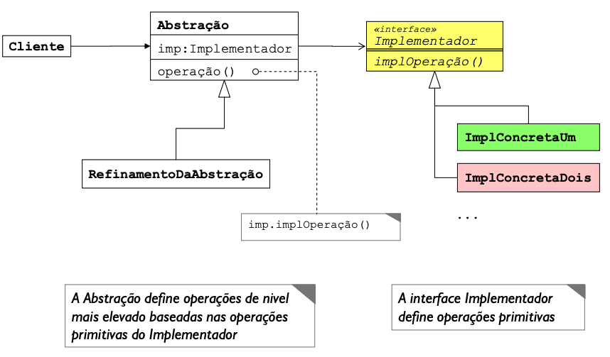
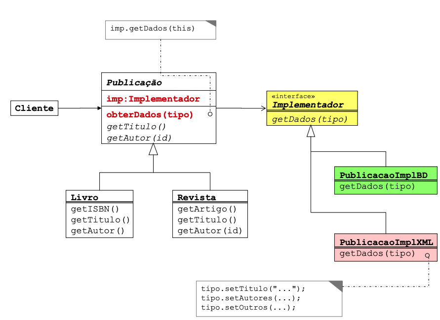

name: inverse class: center, middle, main-title # Alguns Padrões com Exercícios - Parte 2 Laboratório de Programação .footnote[.black.bold[*]Basedo no curso Padrões de Desing com Aplicações em Java - Helder da Rocha] --- #Bridge > "Desacoplar uma abstração de sua implementação para que os dois possam variar independentemente." [GoF] > \o/ --- #Bridge Problema - Necessidade de um driver - Exemplo: implementações específicas para tratar objeto em diferentes meios persistentes <center>  </center> --- #Bridge Usar herança ajuda um pouco, mas ainda deixa complicado caso a coisa cresça <center>  </center> --- #Bridge Uma solução: separe a implementação da especificação <center>  </center> --- #Bridge Uma solução: separe a implementação da especificação <center>  </center> --- #Bridge ```java public interface ImplPublicacao { String getTitulo(); String getAutor(); } public abstract class Publicacao { protected ImplPublicacao imp; public Publicacao(ImplPublicacao imp) { this.imp = imp; } public abstract String getTitulo(); public abstract String getAutor(); } ``` --- #Bridge ```java public class Livro extends Publicacao { public Livro(ImplPublicacao livro) { super(livro); } public String getTitulo() { return imp.getTitulo(); } public String getAutor() { return imp.getAutor(); } } ``` --- #Bridge ```java public class LivroCSVImpl implements ImplPublicacao { public String getTitulo(){ return "Ex_CSV"; } public String getAutor(){ return "Ex_CSV"; } } public class LivroBdImpl implements ImplPublicacao { public String getTitulo(){ return "Ex_BD"; } public String getAutor(){ return "Ex_BD"; } } ``` --- #Bridge ```java public class App { public static void main(String []args) { ImplPublicacao repXML = new LivroCSVImpl(); ImplPublicacao repBD = new LivroBdImpl(); List<Livro> data = new ArrayList<>(); data.add(new Livro(repXML)); //for all data.add(new Livro(repBD)); //for all for (Livro i : data) System.out.println(i.getAutor()); } } ``` --- #Exercício Utilizando a ideia do bridge de livros com múltiplas fontes de dados: - Implemente um programa totalmente OO que organiza veículos. Os veículos podem ser carro, caminhão, ... Eles são classificados pela capacidade e carga. - A capacidade é a quantidade de passageiros: pequeno, médio, grande ... A carga diz respeito a quantidade de peso que levam: médio porte, grande porte .... *. - Para todos eles, crie um comportamente de "Ficha Técnica" que deve imprimir todas as informações. - As informações podem ser implementadas usando um arquivo CSV ou um banco de dados. *Se desejar crie mais classificações - Use algum padrão já estudado antes